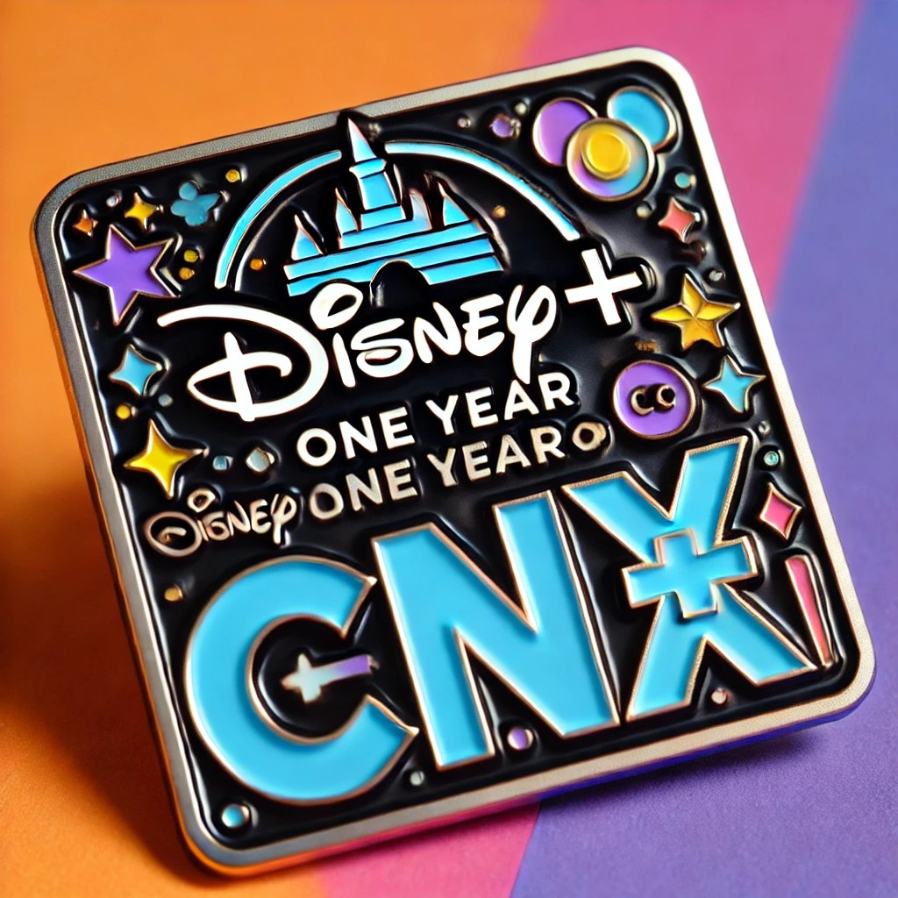
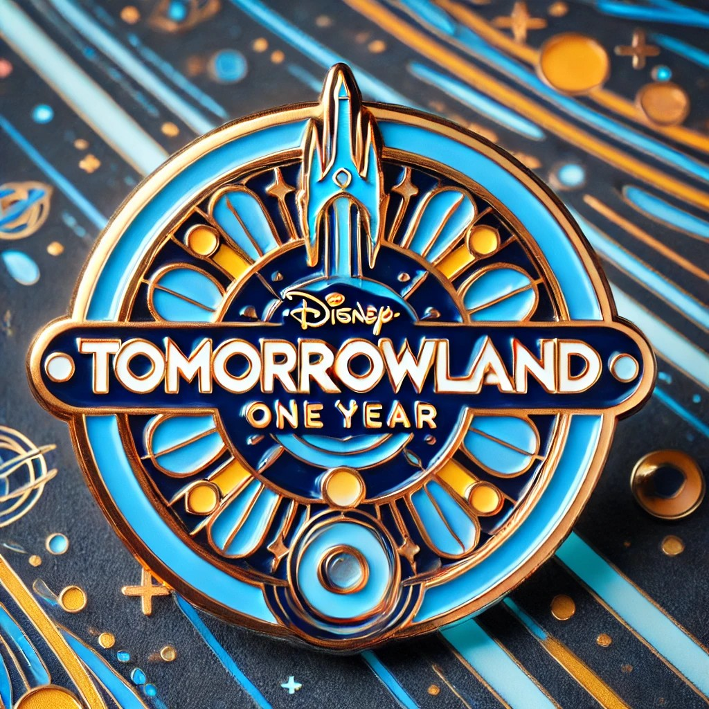
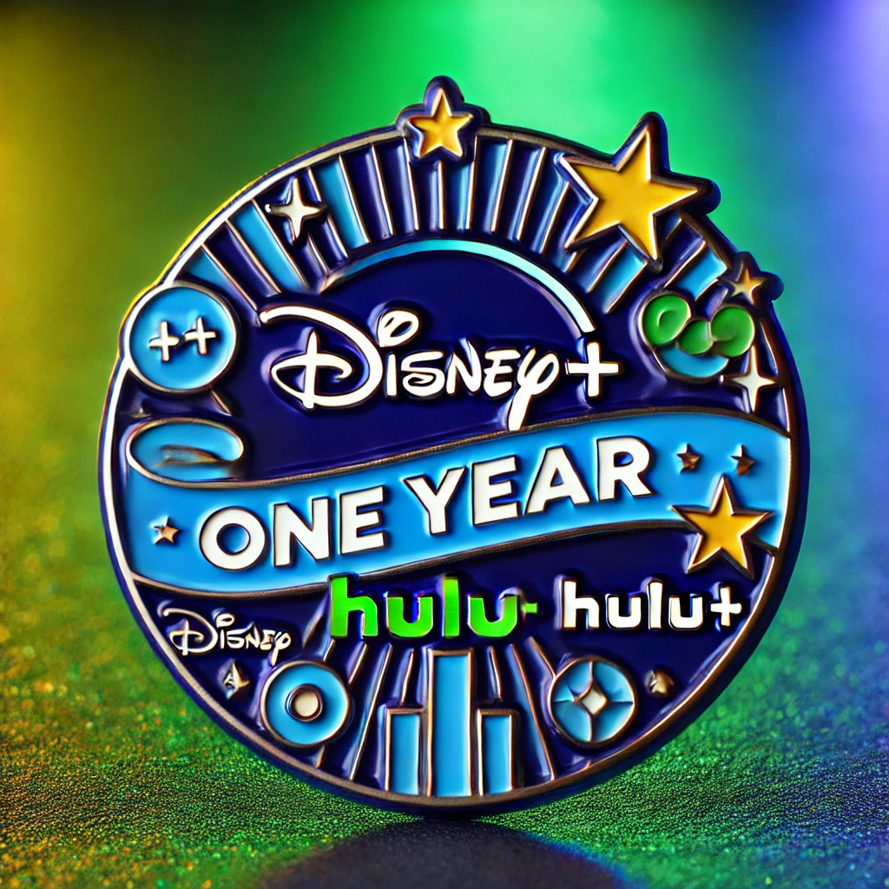

It is my pleasure to share my page with you and show you my content for the Disney Yearly Pin Contest. I have brought 3 magical proposals that I hope you will like.
1. Happy Birthday Disney+ in concentrix
A pin design celebrating one year of Disney+ at Concentrix, featuring the Disney logo prominently at the top. Below the Disney logo, the letters 'CNX' are displayed in a bold, modern font. The design is colorful and festive, incorporating elements of stars, streaming icons, and possibly a subtle reference to Disney characters or shows while keeping the overall design sleek and commemorative. The background is dynamic with vibrant colors that evoke a celebratory theme.
2. Tomorrowland Pin theme
Celebrate a year of limitless imagination and adventure with Disney+! This commemorative pin takes inspiration from Tomorrowland's sleek, futuristic aesthetic, blending cosmic blues and radiant golds. At its center, 'Disney+ One Year' shines bright, marking a milestone in the journey through a universe of beloved stories, unforgettable characters, and timeless magic.
3. A Year of Magic Disney+ and Hulu+ Collaboration
The pin celebrates the first anniversary of both Disney+ and Hulu+, blending their iconic color schemes. Disney+ is represented by its signature blue, while Hulu+ features vibrant green. The design emphasizes harmony between the two platforms, with sleek lines and celebratory elements like stars or subtle streaming icons. The minimalist yet festive layout showcases both brands equally, creating a commemorative pin that marks their collaboration and success.
Thank you all for checking out my pin proposals for the year for Disney+ at Contentrix! Your interest and support mean a lot to me. I hope you enjoyed the proposals and that each one brought a bit of magic to your day.
Made By: Nicolás Cubillos Leyva Wave 2A